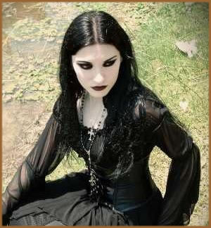

Existe em Portugal a idéia de que os "góticos"
são todos seres soturnos, que gostam todos de cemitérios,
que nenhum admite ir à praia, que são tristes e
melancólicos. A tristeza e melancolia sim, face aos preconceitos
e desconhecimento dos seus ideais e origens culturais. Há
nas reuniões de gente vestida de negro uma alegria e romantismo
que se reflete metaforicamente através da lua. O seu "satélite
do amor". No entanto, alguns, não sabem colocar limites
às necessidades teatrais. Afinal, o que os distingue?
Imagine uma história
que recorra à crueldade e perversidade como forma de glorificar
a virtude - que no final sempre triunfa. Uma donzela virtuosa,
um herói apaixonado e um vilão que não olha
a meios para obter os seus fins. A isto, acrescente as forças
ocultas do sobrenatural e um ambiente tenebroso. "Tempere"
depois, com os seguintes elementos: a existência de um antigo
manuscrito; magia; fantasmas ou espectros; loucura e sonhos proféticos;
um castelo antigo ou em ruínas; obras de arte, armaduras
e espadas ferrugentas; crimes e imenso sangue; religião
católica; Itália; e a Natureza como "leit-motif".
Resultado: a essência do "Gótico". Com
estes "condimentos" é fácil apontar o
dedo.
A
defender a causa está a estilista e criadora da marca DarkVenus
Fashion, Vanessa Virgílio. "Ser gótico
é ser livre de fazer o que se sente, amar, sonhar, criar…
Simplesmente existe uma maior
ligação à morbidez, ao melancolismo, aos
elementos da natureza, às artes, à poesia, à
música e ao vestir–se de preto, à maquiagem
carregada ou não. "Ser Gótico" é
mostrar ao mundo, à sociedade, que existem pessoas com
maior sensibilidade, que sendo assim, mostram-se de forma a chocar
a normalidade. Apesar de tudo gosta-se de ser assim. Um Gótico
quer ser visto naturalmente como pessoa normal sendo diferente,
como se passa lá fora na maior parte dos países.
Em Portugal, as pessoas Góticas são muito apontadas
por se vestirem ou pensarem diferente da normalidade. Espero que
estes preconceitos e idéias erradas em relação
a este estado de estar na vida, acabem brevemente, já que
no estrangeiro a educação e civismo das pessoas
é extremamente superior."
Para Sara Patrão, 28
anos, sócia e relações públicas do
CultoClub, em Cacilhas, a origem dos preconceitos está
no desconhecimento generalizado das origens e desenvolvimento
ao longo da história do conceito de Gótico. "A
origem do termo Gótico, vem dos Godos, uma tribo germânica
do século III / IV.
Mas foi no século XIX, através da novela gótica,
os autores chamados "satânicos" ou laquistas,
o Locus Horrendus, os românticos com toda a sua teatralidade
estética (olheiras, vestimenta negra), o interesse pela
anatomia (nomeadamente o esqueleto humano e todos os seus ossos),
os cemitérios, os romances de cavalaria, o morrer por amor,
as ruínas, as pinturas soturnas, o sangue e toda uma panóplia
de interesses que mais tarde criaram os clichés".
Em Portugal, o movimento,
apesar de já bastante difamado, ainda é recente.
"O Gótico surgiu nos meados dos anos 90, mas apenas
em ambientes restritos. As pessoas encontravam-se em concertos,
festas organizadas que envolviam sempre música e moda (o
modo de vestir identificava as pessoas). Atualmente, o Gótico
manifesta-se com maior força na faixa etária mais
jovem, dos 15 aos 25 anos. Existem sites onde ainda se pode ouvir
música Gótica: Tocsin, Jukebox, Disorder, Festas
Graveyard Sessions – em Lisboa. Em Almada, o Lado Negro
bar e o Culto bar. Em Setúbal: o La Bohême, e no
Porto: o Heavens Gothic bar. Também existe lugar para a
moda Gótica: vestuário e acessórios por medida
com influências medievais, góticas, lolita, cyber,
fetiche e punk, podem ser adquiridos na loja Darkfashion",
explica Vanessa Virgílio.
Se o negro é a cor base
na indumentária Gótica, também na música
ela é predominante. Bandas como Siouxsie and the Banshees,
The Damned, Bauhaus,
The
Cure, Joy
Division, Sisters
of Mercy, UK Decay, Fields of the Nephilim
são no entender da estilista "muito importantes
na manifestação do Gótico". Também
a literatura ajudou a consolidar o movimento. Shakespeare é
exemplo disso, ao utilizar, nas suas peças, uma parte dos
elementos que se encontram na escola gótica, como é
o caso do fantasma em Hamlet, as bruxas em Macbeth
ou o carácter distorcido de Ricardo III na peça
com o mesmo nome.
"Mas as aparências
iludem e nem todos os Góticos são seres soturnos.
Existem uns que gostam de praias, outros não (se calhar
porque virão em algum Drácula ou leram num livro
que não se podia apanhar Sol), o ser triste e melancólico,
faz parte de estados de espírito e nem sempre nos sentimos
alegres ou felizes, embora conheça uma pessoa ou outra
que é o expoente máximo da alegria e da despreocupação!
Mas se a maioria continuar a acreditar nisso e a mensagem passada
for essa, a idéia tem tendência a aumentar",
confessa Sara Patrão. Como em todos os grupos sociais,
alguns não sabem colocar limites às necessidades
teatrais. "Há sempre quem caía em exageros.
Há quem se julgue vampiro. Há quem se entusiasme
e ande de espada em pleno metrô. De fato há pessoas
que não sabem colocar limites, e talvez sejam estas situações
a causa dos tais preconceitos que existem e que marcam pelo exagero
o movimento Gótico", diz Vanessa Virgílio.
A reforçar a idéia,
Sara Patrão destaca a "maturidade para criar e
desenvolver projetos, parcerias. Saber se é aquilo mesmo
que se quer fazer, sentir que é esse o caminho. Se cada
um continuar a pensar que vestido vai usar na próxima festa,
ou que CD vai comprar para ter mais que o amigo da tribo não
vamos a lado algum… E o chocar por chocar também
não vai ajudar. A estratégia é a união."
A verdade é que há nas reuniões de "gente
vestida de negro" uma alegria e romantismo que se reflete
metaforicamente através da lua. Em jeito de desabafo, Sara
Patrão afirma: "A sociedade gosta de me "apelidar"
de Gótica. Eu prefiro apelidar-me de ultra-romântica,
mas já me chamaram nomes mais feios! Um tipo vestido de
preto é Gótico… Um de branco é o quê?"
Por
Patrakas
Extraído
e adaptado de
http://pt.shvoong.com